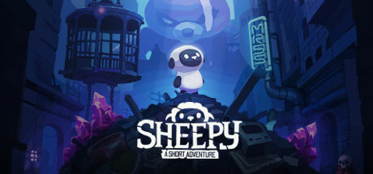
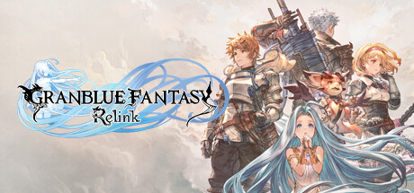
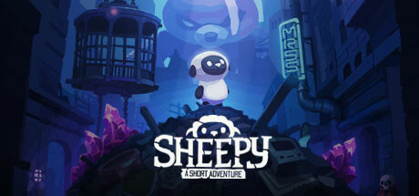
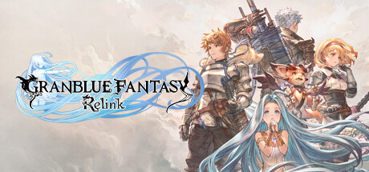

PalWorld

Palworld is a game that a lot of people thought of as Pokemon. Pokemon gamers have been wanting a game like this for years. Nintendo and Game Freak have consistently been saying they are working on one but kept failing. So an indie dev steps up and makes a game similar to what the people have been waiting for. Palworld was released on Jan. 19 and has been described by fans as “Pokémon with guns." The game had an all-time peak count of more than 1.8 million concurrent players on Steam and it also sold over 5 million copies in the first three days. You catch pals, build bases, and have to collect materials to upgrade your weapons and base. Once you catch a pal you can make them work for you. Some people didn't like that the game kinda had slaver, you could even catch humans but the game frowned upon it.
Lethal Company

Lethal company was created by a solo developer who goes by the alias Zeekerss, the video game became an absolute sensation on platforms like Twitch and had more than 239,000 concurrent players on Steam in just months after its October release. Lethal Company is a first-person co-op horror game where you work for a mysterious entity known as “The Company.” Each day, you and your friends will explore dangerous alien worlds and collect scrap materials and trinkets to sell back to the employer. The game contains plenty of jump scares and dark corridors but also can be funny and many people have made memes of the game. The game’s visuals blend with the PlayStation 1-era horror aesthetics almost, but the monsters you have to either kill or avoid are still scary to most people. People have made even mods to add to the game, some to make it easier and some harder.
 


